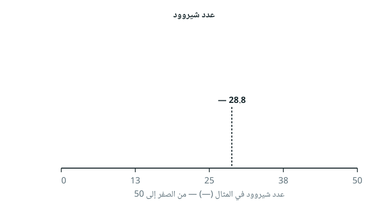

عدد شيروود
Sherwood number
عدد شيروود Sh يقيس نسبة انتقال الكتلة بالحمل إلى الانتشار الجزيئي عند سطح: Sh = k_c·L/D. وهو النظير لعدد نسلت في انتقال الحرارة، ويُستعمل في تصميم أجهزة التجفيف والامتصاص.
حين يمر سائل أو غاز على سطح يذوب فيه أو يتبخر منه، ينتقل المادة بالحمل لا بالانتشار وحده. وعدد شيروود يقيس مقدار الزيادة في انتقال الكتلة بسبب الحمل. مثال: صفيحة مسطحة طولها 0.500 m يمر عليها هواء بسرعة 2.00 m/s، ومعامل الانتشار 2.60×10⁻⁵ m²/s ومعامل انتقال الكتلة 1.50×10⁻³ m/s: Sh = 1.50×10⁻³×0.500/2.60×10⁻⁵ = 28.8. وهذا يعني أن الحمل يزيد انتقال الكتلة نحو 29 مرة عن الانتشار الصافي.
كيف تعمل الظاهرة؟
في الجريان على سطح تتكون طبقة حدّية سرعتها أقل من سرعة السائل الحر. وداخل هذه الطبقة ينتقل المادة بالانتشار أساساً، وخارجها بالحمل. وكلما كانت الطبقة أرق كان تدرج التركيز أشدّ وانتقال الكتلة أسرع. وعدد شيروود يقيس هذا الأثر: قيمته الكبيرة تعني طبقة حدّية رقيقة وحملاً قوياً. ولهذا يزيد Sh بزيادة سرعة الجريان ويقلّ بطول السطح.
العلاقة بالأرقام
Sh = k_c·L/D، وSh = 0.664·Re^0.5·Sc^(1/3) للصفيحة المسطحة الصفيحية، وSh = 0.037·Re^0.8·Sc^(1/3) للمضطرب. وSc = ν/D. مثال: Re = 3.33×10⁵ وSc = 0.600: Sh = 0.664×577×0.843 = 323. وعند مضاعفة السرعة إلى 10.0 m/s: Re = 6.67×10⁵ وSh = 0.664×816×0.843 = 457، أي زيادة 41% لا 100%.
مفاهيم متقاربة
يُفرَّق بين Sh وNu: الأول لانتقال الكتلة والثاني للحرارة، ويُستبدل Pr بـSc. ويُفرَّق بين Sh وBi_m: شيروود يقارن الحمل بالانتشار في السائل، وبيوت يقارن الداخل بالسطح. ويُفرَّق بين Sh المحلي والمتوسط. وأخيراً يُفرَّق بين Sh في الجريان القسري وSh في الحمل الحراري الطبيعي، حيث الثاني يعتمد على Gr لا على Re.
حدود التطبيق
العلاقات التجريبية لشيروود صالحة في نطاقات محددة من Re وSc، ولا تُستعمل خارجها. ولا تصف الجريان في القنوات الضيقة حيث تتأثر الطبقة الحدّية بالجدران. ولا تصف انتقال الكتلة في وجود تفاعل كيميائي سطحي سريع. وأخيراً لا تصف الأنظمة التي يهيمن فيها الانتشار في مسام دقيقة.

| الكمية | القيمة | المصدر |
|---|---|---|
| عدد شيروود في المثال | 28.8 — | [1] |
المصادر
- 1 CODATA Value: Boltzmann constant — NIST — CODATA 2022 recommended values (2024). physics.nist.gov/cgi-bin/cuu/Value?k · اطُّلع عليه 2026-11-22
- 2 CODATA Value: molar gas constant — NIST — CODATA 2022 recommended values (2024). physics.nist.gov/cgi-bin/cuu/Value?r · اطُّلع عليه 2026-11-22
استشهد بهذا المصطلح
الصيغتان مبنيتان من بيانات الصفحة نفسها: العنوان والتاريخ ورابط النسخة المنشورة.
عدد شيروود — Sherwood number. (2026). ديوان المعرفة — انفراد. https://infiradev.com/diwan/terms/term-sherwood-number.html
@misc{term-sherwood-number2026,
title = {عدد شيروود},
titleaddon = {Sherwood number},
howpublished = {{ديوان المعرفة — انفراد} — مرجع علمي عربي},
year = {2026},
url = {https://infiradev.com/diwan/terms/term-sherwood-number.html},
urldate = {2026-11-26},
note = {مراجعة علمية: hermes (مراجعة معتمدة 2026-11-26)}
}
راجعه: hermes (مراجعة معتمدة 2026-11-26) · 2026-11-26 · آخر تحديث 2026-11-22